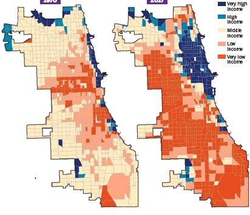
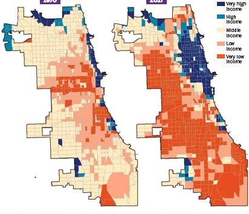

Homework 10: The Relationship Between Poverty Rates and Hospital Locations in Chicago
Gabriela Duncan
Chicago will always hold a special place in my heart, because it is the city that my family lived in when they moved to the United States from Colombia in the late 1960's. My Grandfather received an opportunity to work at a hospital, which I which I decided to track hospital locations. I wanted to see if there was a relationship between poverty rates and the amount of hospitals in neighborhoods in Chicago. Before making my map, I assmued that the neighborhoods with a higher poverty rate would have the least amount of libraries. For my data, I added a 1 kilometer buffer around each hospital, and I dissolved a few counties together to represent the wealthiest region of the city (refer to map below). After making the map, I found that there was not a clear pattern. Overall, there seems to be a bit more hospitals on the North Side, which is relatively richer than the South Side, but even then, there is not a clear relationship.
 

Data Used For This Project
Cook County Shapefile
Clean Chicago Poverty Rate Data
Original Chicago Poverty Data
Hospitals